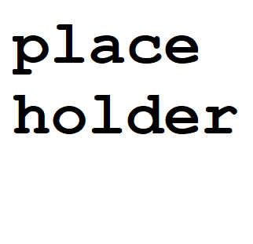

<head>
  <script crossorigin src="https://unpkg.com/react@16/umd/react.development.js"></script>
  <script crossorigin src="https://unpkg.com/react-dom@16/umd/react-dom.development.js"></script>

  <script src="https://code.jquery.com/jquery-3.3.1.min.js"
  integrity="sha256-FgpCb/KJQlLNfOu91ta32o/NMZxltwRo8QtmkMRdAu8=" crossorigin="anonymous"></script>
  <script src="https://maxcdn.bootstrapcdn.com/bootstrap/4.1.3/js/bootstrap.min.js"></script>

  <script src="https://cdnjs.cloudflare.com/ajax/libs/redux/4.0.0/redux.min.js"></script>
  <script src="https://cdnjs.cloudflare.com/ajax/libs/react-redux/5.0.7/react-redux.min.js"></script>

  <script src="https://cdnjs.cloudflare.com/ajax/libs/babel-standalone/6.26.0/babel.js"></script>

  <link rel="stylesheet" href="https://maxcdn.bootstrapcdn.com/bootstrap/4.1.3/css/bootstrap.min.css">
  <link rel="stylesheet" href="css/projectsInfo.css">
  <link rel="stylesheet" href="css/nav.css">
  <link rel="stylesheet" href="https://use.fontawesome.com/releases/v5.2.0/css/all.css" integrity="sha384-hWVjflwFxL6sNzntih27bfxkr27PmbbK/iSvJ+a4+0owXq79v+lsFkW54bOGbiDQ" crossorigin="anonymous">
  <link href="https://fonts.googleapis.com/css?family=Cabin" rel="stylesheet">
</head>

<div id="nav"></div>
<div id="root"></div>

<script type="text/babel">

const projects = [
  {
    type: "Web Applications",
    key: "Web Aplications",
    content:[
      {
        key:  "calculator",
        content: {
          thumbnail: null,
          name: "Calculator",
          tech: ["HTML", "CSS", "JavaScript: React and Redux"],
          info:
          `
          Calculator Application: The visual interface is generated using React Components and the State of the
          calculator (value in the display) is managed throough the Redux Store. The application
          is comparable to a standard calculator.
          `,
          href: "https://github.com/HaydenYap/calculator"
        }
      },
      {
        key:  "Drum-Machine",
        content: {
          thumbnail: null,
          name: "Drum Machine",
          tech: ["HTML", "CSS", "JavaScript: React"],
          info:
          `
          Drum Machine: Performs audio playback of set files based on input in the form of mouse clicks
          on specific buttons or keystrokes of the label on each button. A small box on the right changes to display
          the name of the audio file on playback.
          `,
          href:"https://github.com/HaydenYap/Drum-machine"
        }
      },
      {
        key:  "Markdown-Previewer",
        content: {
          thumbnail: null,
          name: "Markdown Previewer",
          tech: ["HTML", "CSS", "JavaScript: jQuery and React"],
          info:
          `
          Markdown Previewer: Displays a real time preview of the parsed markdown content using the
          Markedjs on <b><a href="https://github.com/markedjs/marked">GitHub</a></b>.
          `,
          href:"https://github.com/HaydenYap/Markdown-Previewer"
        }
      },
      {
        key:  "Pomodoro-Clock",
        content: {
          thumbnail: null,
          name: "Pomodoro Clock",
          tech: ["HTML", "CSS", "JavaScript: React, Redux"],
          info:
          `
          Pomodoro Clock: A timer with two seperate intervals. When the primary interval(session) runs down to 0:00,
          the secondary interval(break) is then started. This process repeats indefinitely. The state of this application
          is handled through Redux which manages which interval to use and what value remains on the timer.
          `,
          href:"https://github.com/HaydenYap/Pomodoro-Clock"
        }
      },
      {
        key:  "Random-Quote-Machine",
        content: {
          thumbnail: null,
          name: "Random Quote Machine",
          tech: ["HTML", "CSS", "JavaScript: BootStrap and jQuery"],
          info:
          `
          Random Quote Machine: Displays a random quote on page load and in reponse to click of "new quote" button.
          The quote is selected from a finite array of quotes. With each page load and new quote, the color scheme
          of webpage alters using jQuery and BootStrap.
          `,
          href:`https://github.com/HaydenYap/Random-Quote-Machine`
        }
      }
    ]
  }
]

class ProjectBox extends React.Component{
  constructor(props){
    super(props);
  }

  render(){
    return(
      <div className="media">
        
        <div className="media-body align-self-center project-text">
          <div className="project-name">
            {this.props.box.name}
          </div>
          <div className="project-tech">
            {this.props.box.tech.join(" ")}
          </div>
          <div className="project-info">
            {this.props.box.info}
          </div>
          <div className="project-href">
            <a href={this.props.box.href}>Github</a>
          </div>
        </div>
      </div>
    )
  }
}

class ProjectSection extends React.Component{
  constructor(props){
    super(props);
  }

  render(){
    const projectBoxes = this.props.projects.map(function(box){
        return(
          <div id={box.key} key={box.key}>
            <ProjectBox box={box.content} />
          </div>
        )
      }
    )
    return(
      <div>
        {projectBoxes}
      </div>
    )
  }
}

class Root extends React.Component{
  constructor(props){
    super(props);
  }

  render(){
    const projectSections = projects.map(function(section){
        return(
          <div id={section.key} key={section.key}>
            <ProjectSection projects={section.content} />
          </div>
        )
      }
    )
    return(
      <div id="app">
        {projectSections}
      </div>
    )
  }
}

ReactDOM.render(<Root />, document.getElementById('root'))

</script>
<script type="text/babel" src="https://s3.ca-central-1.amazonaws.com/haydenyap.com/scripts/nav.js"></script>
